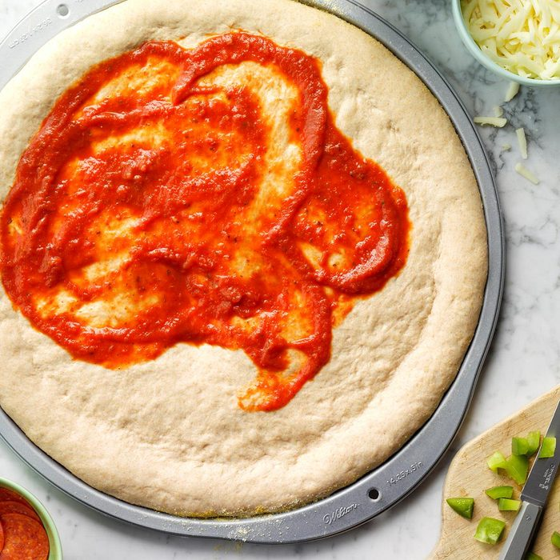

Pizza Dough

Easy scratch-made pizza dough.
Ingredients
- 3/5 cups warm water
- 1 teaspoon sugar, divided
- 1/2 package active dry yeast
- 1 3/4 cups all purpose or bread flour
- 1/2 teaspoon salt
- 1/3 cup olive oil
Instructions
- In a small bowl, mix warm water and 1/2 teaspoon sugar; add yeast and whisk until dissolved. Let stand until bubbles form on surface.
- In a large bowl, whisk flour, salt, remaining 1 teaspoon sugar and, if desired, dried herbs. Make a well in center; add yeast mixture and oil. Stir until smooth. Add enough remaining flour to form a soft dough.
- Turn onto a floured surface; knead, adding more flour to surface as needed until no longer sticky and dough is smooth and elastic, 6-8 minutes.
- Place in a large greased bowl; turn once to grease top. Cover and let rise in a warm place for 30 minutes; transfer bowl to refrigerator and chill overnight. Allow dough to come to room temperature, about 30 minutes, before rolling.